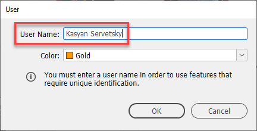
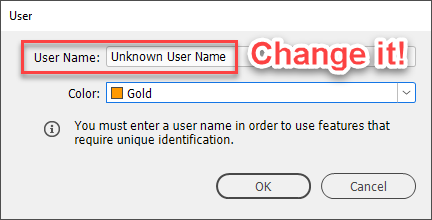
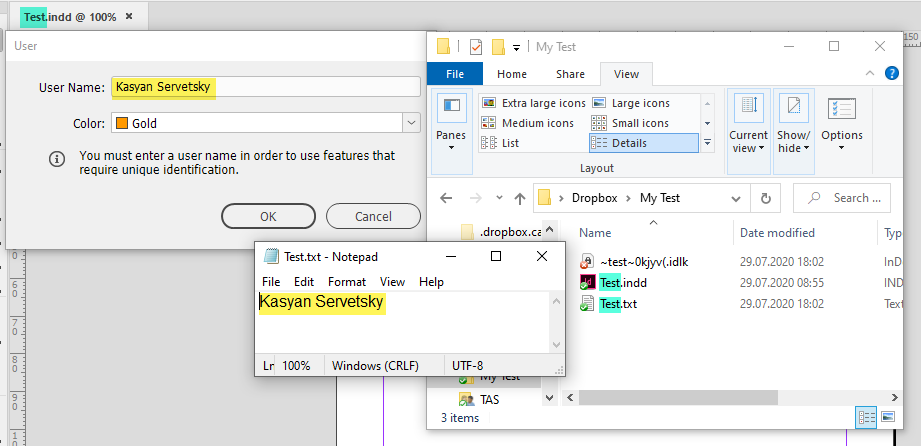
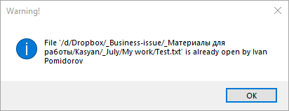

Warn about documents open on DropBox
This is an event script so it should be installed in the startup scripts folder. Written by Kasyan in InDesign 2020. It’s experimental and untested so far.
Since 2018 we switched from our office network to DropBox working mostly from our homes. It’s a much better solution since we have much less crashes in InDesign, wholly foolproof because DropBox keeps all document revisions for a month, so if someone spoils or deletes a document, you can restore it, and, if there’s an urgent matter, it’s even possible to send a file from your smartphone to someone while you’re walking in the park. However, there’s a problem: unlike on the network, two or more users can open a document at the same time. DropBox handles such a situation as good as it can: it doesn’t overwrite changes made by others and creates ‘conflicted copies’. Of course, that’s much better than losing someone’s edits made for hours, but you still have to lose time to compare the ‘conflicted copies’ to figure out which one contains the most recent editing.
To solve this problem, I wrote this script that remotely resembles the ‘lock file approach’ used by Adobe for InDesign documents. The key is the user name: it’s supposed to be filled in and different for all users.

If two users would have the default or the same name, this won’t work.

Install the script and restart InDesign. From now on, whenever you open an InDesign file located on DropBox*, a txt-file with the same base name will be created in the same folder. If you double click it, you will see that it’s contents is the user name.

If the txt-file already exists in the folder, but its user name is different than the one in the application’s ‘File > User…’ dialog box, the script gives a warning like so:

When you close an InDesign file (again located on DropBox*), and the user name in the txt-file is the same as the one in the application’s ‘File > User…’ dialog box, the script deletes the txt-file. In other words, it’ll be deleted only if it was created by you.
* It means that the document’s file path contains the word ‘Dropbox’.
At the moment, I’m out of work so can’t test how it works in practice. In the future, maybe I’ll add a menu item with a checkbox so the user could turn on/off the script instead of adding/removing it to/from the startup scripts folder.
Click here to download the script.
See also Prevent InDesign to open a document multiple times by Max Schmidt.